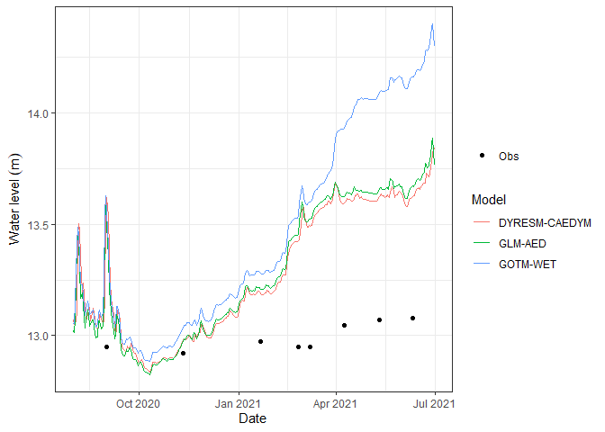

The Aquatic Ecosystem Model Ensemble (AEME) package allows you to setup and run an ensemble of aquatic ecosystem models. The models are DYRESM-CAEDYM, GLM-AED and GOTM-WET.
Development
This package was developed by LimnoTrack as part of the Lake Ecosystem Research New Zealand Modelling Platform (LERNZmp) project.
Installation
You can install AEME from GitHub with:
# install.packages("devtools")
devtools::install_github("limnotrack/AEME")Currently, AEME is only available for Windows users.
Example
This is a basic example which shows you how to build and run one of the models in the ensemble:
library(AEME)
## basic example code
tmpdir <- tempdir()
aeme_dir <- system.file("extdata/lake/", package = "AEME")
# Copy files from package into tempdir
file.copy(aeme_dir, tmpdir, recursive = TRUE)
path <- file.path(tmpdir, "lake")
aeme <- yaml_to_aeme(path = path, "aeme.yaml")
model_controls <- get_model_controls(use_bgc = TRUE)
model <- c("dy_cd", "glm_aed", "gotm_wet")
aeme <- build_aeme(path = path, aeme = aeme, model = model,
model_controls = model_controls,
ext_elev = 5, use_bgc = TRUE)
aeme <- run_aeme(aeme = aeme, model = model, verbose = FALSE,
path = path, parallel = TRUE)The model input and output is handled as it’s own S4 object of class aeme. This allows for the standardisation and generalisation of functions for this class alongside ensuring integrity and validity to it’s structure.
class(aeme)
#> [1] "Aeme"
#> attr(,"package")
#> [1] "AEME"This allows for easier handling of the model output data within our structure and allows for condensed output to be printed to the console:
aeme
#> AEME
#> -------------------------------------------------------------------
#> Lake
#> Wainamu (ID: 45819); Lat: -36.89; Lon: 174.47; Elev: 23.64m; Depth: 13.07m;
#> Area: 152343 m2; Shape file: Present
#> -------------------------------------------------------------------
#> Time
#> Start: 2020-08-01; Stop: 2021-06-30; Time step: 3600
#> Spin up (days): GLM: 2; GOTM: 1; DYRESM: 1
#> -------------------------------------------------------------------
#> Configuration
#> Model controls: Present
#> Physical | Biogeochemical
#> DY-CD : Present | Present
#> GLM-AED : Present | Present
#> GOTM-WET : Present | Present
#> -------------------------------------------------------------------
#> Observations
#> Lake: Present; Level: Present
#> -------------------------------------------------------------------
#> Input
#> Inital profile: Present; Inital depth: 13.07m; Hypsograph: Present (n=44);
#> Meteo: Present; Use longwave: TRUE; Kw: 1.31
#> -------------------------------------------------------------------
#> Inflows
#> Data: Present; Scaling factors: DY-CD: 1; GLM-AED: 1; GOTM-WET: 1
#> -------------------------------------------------------------------
#> Outflows
#> Data: Present; Scaling factors: DY-CD: 1; GLM-AED: 1; GOTM-WET: 1
#> -------------------------------------------------------------------
#> Water balance
#> Method: 2; Use: obs; Modelled: Absent; Water balance: Present
#> -------------------------------------------------------------------
#> Parameters:
#> Number of parameters: 0
#> -------------------------------------------------------------------
#> Output:
#> Number of ensembles: 1
#> DY-CD: 1
#> GLM-AED: 1
#> GOTM-WET: 1Model data can be visualised easily using the plot_output() function:
p1 <- plot_output(aeme = aeme, model = model, var_sim = "HYD_temp")
p1
Also, visualising lake level plots.
p2 <- plot_output(aeme = aeme, model = model, var_sim = "LKE_lvlwtr",
facet = FALSE)
p2
Extension
- aemetools - For downloading meteorological data, calibration and sensitivity analysis.
- bathytools - For processing lake bathymetry data.